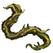

Корень аморфы
Предметы / С врагов
Открыть в интерактивной вики →
| Вес | 1 |
|---|---|
| Цена | 0 |
Описание
Ценный корень, получаемый из аморфы. Изготовленная из него паста позволяет певцам сохранить безупречный голос. Их скупает  Яцек Цыган
Яцек Цыган
Яцек Цыган| Ценный корень, добытый из Аморфы. Паста из него помогает певцам сохранить прекрасный голос. |
Рецепт
Торговля: 5k
Дроп

Применение
|
Как добыть
| Получаем за победу над: |